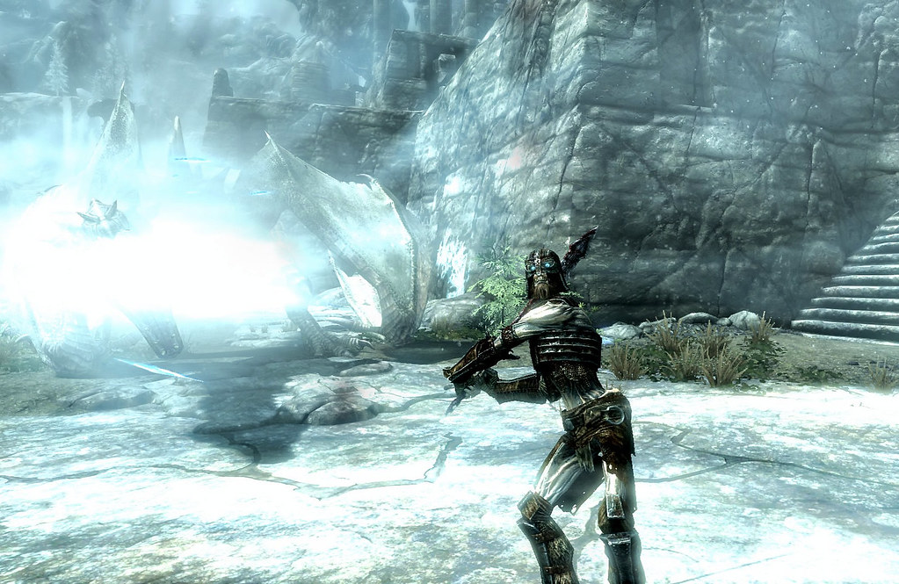

| Beasts | Draugr | Dwemer |
| Humans | Spiders | Thalmor |
Skyrim is full of many beasts that will threaten the players. Many of them are terratorial, and so long as you keep your distance they will remain peaceful. These are just a few:
Many of these creatures preside in the mountains, far off the roads. It's because of this that travelers are frequently warned to stay on the roads - While it may be faster to take shortcuts, there's a chance that creatures are lurking in the trees. Now, why don't dragons fall under the beast category? What the rest of these beasts have in common is they have no interest in interacting with humans. They are territorial, and will only combat those who come too close. They aren't particularly intelligent either. Dragons, however, are intelligent enough to have their own language. They can communicate with humans, and are able to be reasoned with. Most rational people would not try to reason with a bear.
 Draugr are one of the more dangerous types of monsters in Skyrim, though not encountered by commonfolk. These creatures are more threatening for adventurers, as they dwell in Skyrim's many crypts and ruins. Some say Draugr came to be because they served the Dragons in the days of old, and this is their punishment. Others say they are simply restless spirits and must be put to rest. Whatever their origins may be, it is wise to stay wary of these creatures as they are able to wield weapons and spells with similar to skill the living.
Image credit to Rain Love AMR
It is important to note that the Dwemer people no longer exist on Nirn, it is only their constructs, or Dwemer Animunculi, that remain. The history of the Dwemer people, and how these constructs still run, is still being debated by scholars to this day. All that remains of the Dwemer people is these constructs - The ruins still pump steam and turn gears, and the constructs are the abandoned ruins guardians. There are four primary types of construct: Spider, Sphere, Ballista, and Centurion. Spiders and spheres are the most common, found in all Dwemer ruins. The spiders are exactly as they sound, with sharpened legs. Spheres can be compared to beetles, rolling around the ruins until an intruder arrives; Then they spring into action and strike with either blade or crossbow. Ballista and Centurions are more rare, and not to be trifled with. The Ballista is essentially a large crossbow, a four-legged creature that fires deadly bolts. The Centurion is larger than most men, and is armed with a hammer in one hand and a spring-loaded blade in the other.
These constructs are part of why we have so little information on the Dwemer - The only creatures that are safe from the wrath of these automatons is the Falmer, and it is believed this is because the Dwemer took the Falmer in as slaves before their disappearance.
The men in Skyrim are nearly as brutal as the monsters. The roads are full of bandits, so hungry for septims that they'll attack anyone within their sights. Then in Eastmarch, the Forsworn have returned with a mighty vengenace. The Forsworn live in the mountains, barely clothed with small furs and weilding weapons of sticks and bones. These men and women attack indescriminately as well, except they're most likely seeking a sacrifice. If you hear their calls in the distance, flee the furthest direction away and stay on the roads. While they don't avoid the roads, there's a chance that a guard patrol will spot you and offer safety.
Frostbite spiders are all over Skyrim, but typically not very dangerous unless you encounter a nest. Yes, they are hostile, but typically very easy to kill, standing hip high at most. Nests are far more dangerous for two reasons; One, there are many more spiders in there. Two, there is a very high chance of there being a giant frostbite spider guarding the next. These spiders stand tall above humans, almost triple the size, which makes their bite and venom far more deadly. If you encounter a frostbite spider, it's best to not try to find out where they're coming from unless you have a lot of torches.
The Thalmor are quite the widely hated faction. No one likes them, not a single man in Skyrim, the only individuals that like Thalmor are Thalmor themselves. They carry a loathesome God complex, they're terribly racist, and their group is responsible for many war crimes. If nothing else speaks for their ego, let's use the Oblivion Crisis as an example. Martin Septim sacrificed himself and became an avatar of Akatosh to defeat Mehrunes Dagon and close the gates - But the Thalmor claimed they closed the gates, and Emperor Martin's sacrifice was merely coincidence. Still, their ego doesn't come from nothing. They come from the Summerset Isles, with the most prestigious magic college in all of Nirn. This means that the Thalmore are some of the strongest mages in Skyrim. They have become relevant in Skyrim recently because of the White-Gold concordat, where the Thalmor threatened the Emperor into making a truce between the Imperial Legion and the Thalmor. This later lead to the Civil War in Skyrim, but more on that in the history section.